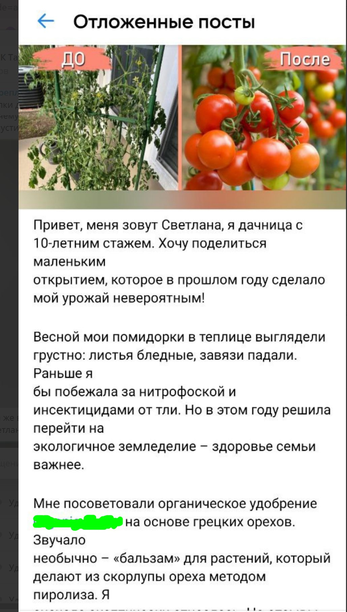
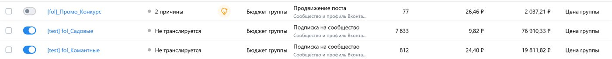
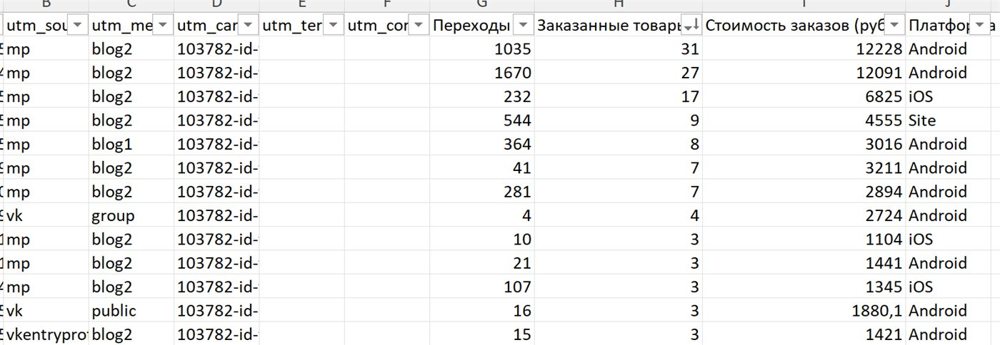

К нам обратился производитель удобрений для комнатных и садовых растений — компания с сильным продуктом и более 20 000 положительных отзывов на Wildberries. Продукт нравится, повторные покупки идут, но клиент уперся в потолок: «хотим больше продаж, не понимаем, где точки роста». Поэтому начали не с рекламы, а с аудита всей системы продаж.
Когда у продукта 20 000+ отзывов, проблема почти никогда не в товаре. Она в том, что о нём знают только те, кто уже нашёл его на маркетплейсе. Наша задача — привести новую аудиторию и усилить позиции карточки.
Шаг 1. Аудит всех каналов продаж
| Канал | Что нашли |
|---|---|
| Wildberries | Флагман продаж, сильная карточка, 20 000+ отзывов. Но рост уперся в потолок органики — новый трафик почти не приходит. |
| Ozon | Канал запущен, но работает слабее WB: низкий бюджет на внутреннюю рекламу, товары собраны в группы без учёта маржинальности. |
| Соцсети (VK) | Сообщество есть, но «спит» — около 1 000 подписчиков, контента нет, продаж из соцсетей ноль. |
| Внешний трафик | Не используется вообще. Карточка WB живёт только за счёт внутренней выдачи маркетплейса. |
Вывод: продукт сильный, но компания зависит от одного канала (WB) и не использует ни внешний трафик, ни соцсети, ни потенциал Ozon.
Шаг 2. Точки роста: куда вести деньги
| Направление | Проблема | Что предложили |
|---|---|---|
| Ozon | Низкая отдача, слабая маржа | Увеличить бюджет на внутреннюю рекламу и пересобрать товарные группы под более маржинальные позиции |
| VK-сообщество | Мёртвый паблик | Превратить в живой канал бренда: контент, рост аудитории, прогрев |
| Внешний трафик на WB | Не используется | Запустить посевы в VK и привести новую аудиторию на карточку — разогнать органику |
По Ozon рекомендации сработали на маржу: перегруппировка ассортимента и усиление внутренней рекламы позволили вытягивать более выгодные позиции, а не «возить» дешёвые товары с низкой наценкой.
Шаг 3. Сезонность: выбрали правильное окно для запуска
Удобрения — сезонный товар. Садовые: главный пик — март–апрель, второй — май–июнь. Комнатные: пики — февраль–апрель и август–сентябрь. Оба пика сходятся на весне — поэтому всю активную кампанию мы спланировали и запустили под весеннее окно, когда каждый рубль рекламы работает эффективнее.
Шаг 4. Креатив: победил сторителлинг, а не «до / после»
| Креатив | Идея | Отклик |
|---|---|---|
| «До / после» | Растение до подкормки и после | Средний — выглядит как реклама, пролистывают |
| Инфографика | Состав, NPK, польза в цифрах | Низкий — «слишком по-рекламному» |
| Сторителлинг «Светланы» | История дачницы, у которой завяли помидоры | Лучший — читают до конца, комментируют, переходят |
Выиграл сторителлинг. Пост от лица обычной дачницы Светланы, у которой «завяли помидоры», читается как живая история, а не реклама. Он вызывает узнавание («у меня так же!»), собирает комментарии и нативно ведёт на карточку.

Шаг 5. Сообщество VK: с 1 000 до 11 000 подписчиков
Мёртвый паблик превратили в живой канал бренда. Рост обеспечила связка инструментов: таргет VK Ads на садоводов (в т.ч. парсинг активных подписчиков конкурентов), переходы с посевов, welcome-бот со скидкой на первый заказ и полезный контент про уход за растениями.
| Показатель | Было | Стало |
|---|---|---|
| Подписчиков VK | ~1 000 | ~11 000 |
| Бюджет на привлечение | — | 100 000 ₽ |
| Стоимость подписчика | — | 13 ₽ |
Подписчик обошёлся в 13 ₽ — вдвое дешевле рынка (в нише «сад и растения» целевой подписчик стоит 26–31 ₽). Такой результат дала связка платного таргета и органических переходов с посевов: виральный пост приводил людей в сообщество бесплатно, поверх платного трафика.

Шаг 6. Посевы в VK: окупились продажами и разогнали органику WB
Главный инструмент — посевная реклама: размещение поста-сторителлинга в тематических сообществах (дача, сад, комнатные растения) с переходом на карточку Wildberries.
| Показатель | Значение |
|---|---|
| Бюджет на посевы | 100 000 ₽ |
| Прямые продажи с посевов | 110 000 ₽ |
Сами по себе 110 000 ₽ прямых продаж — это окупаемость посевов «в ноль с плюсом». Но главная ценность — в том, что происходит с карточкой WB дальше:
- Люди с посевов массово переходят на карточку и выкупают товар в короткий промежуток времени.
- Алгоритм Wildberries видит всплеск выкупов и трактует это как сигнал: «товар востребован, показывать выше».
- Карточка поднимается в органической выдаче — и получает больше бесплатных показов и продаж уже без рекламы.

Итог: что получил клиент за 2 месяца
| Результат | Значение |
|---|---|
| Сообщество VK | 1 000 → 11 000 подписчиков |
| Прямые продажи с посевов | 110 000 ₽ (посевы окупились) |
| Органика на WB | Рост позиций и заказов карточки за счёт внешнего трафика |
| Ozon | Выше маржинальность за счёт перегруппировки товаров и рекламы |
| Узнаваемость бренда | Новая аудитория, живое сообщество, контент |
Бонус: рекомендации клиенту по развитию
- Регулярные посевы под сезон — повторять перед каждым весенним и осенним пиком.
- Контент-воронка в VK — полезные посты про уход + мягкие продажи, прогрев к покупке.
- Сторителлинг как формат №1 — масштабировать «живые истории» (новые персонажи, ситуации).
- Развитие Ozon — довести канал до уровня WB, работая над маржой и рекламой.
- Сбор базы — через welcome-бот превращать подписчиков в повторные продажи.